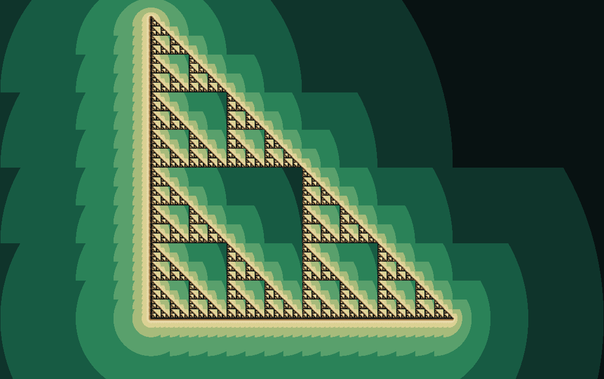

Fractal gallery
Sierpinski Triangle
A triangle made mostly of absence.
This fractal is built by repetition so simple it feels like a magic trick: remove the middle triangle, then do the same to every remaining triangle forever.

What to try first
Look at the largest empty triangle, then find the same emptiness repeated inside each corner.
Zoom into any corner. The image should feel unchanged because each part contains smaller copies of the whole.
Mathematical notes
The complex-plane construction
Every pixel supplies a starting point \(z_0=x+iy\). wxChaos repeatedly expands that point by a factor of two, then chooses one of three translated branches according to its position. Points that remain bounded trace the familiar triangle. This is an inverse-map test, not the geometric line construction used by Sierpinski Triangle (Vector).